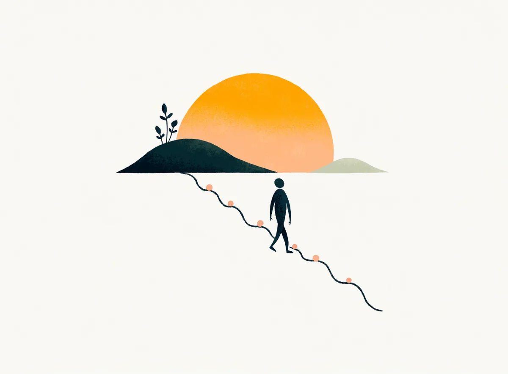

Screening tools, scored instantly
Two minutes of honest answers tell you a lot.
These are the same validated scales the doctors use at every visit, scored in your browser the moment you tap. They screen; they do not diagnose. Nothing is stored unless you choose to attach a result to a booking.

Mood · PHQ-9
Patient Health Questionnaire
For anyone 18 and over who has felt low, flat, tired or hopeless lately, or whose family says they are "not themselves". Also the scale your doctor repeats at each follow-up to see whether treatment is working.
Over the last two weeks, how often have you been bothered by any of the following problems?
Anxiety · GAD-7
Generalised Anxiety Disorder scale
For worry that will not switch off, a racing heart for no reason, panic in the bus or the temple, or the feeling that something terrible is about to happen.
Over the last two weeks, how often have you been bothered by the following problems?
Sleep · ISI
Insomnia Severity Index
For trouble falling asleep, staying asleep or waking too early, over the last two weeks. In Bhavnagar insomnia often follows a late dinner, the phone in bed and the afternoon nap; the doctor asks about all three.
For the last two weeks, please rate each of the following.
What a score is for
A number today. A trend by the second visit.
One score tells you where you stand. The same scale repeated before each follow-up tells the doctor whether the medicine is working, weeks before you would feel sure yourself. That is why the clinic asks for a two-minute check-in on My Care before every visit.
- A drop of 5 points on PHQ-9 or GAD-7 is a real change, not noise
- Below 5 on PHQ-9 held for two visits is what remission looks like on paper
- A rising score between visits brings the next visit forward; you do not have to ask
Tobacco · Fagerström
Fagerström Test for Nicotine Dependence
For anyone who smokes cigarettes or bidis, or chews gutka, mawa or tobacco. The score says how physically dependent you are, which decides whether a plan alone will do or whether medicines should be started before your quit day.
Alcohol · AUDIT-C
Alcohol Use Disorders Identification Test, short form
For anyone who drinks, and for a family member answering on behalf of someone who does. Gujarat is a dry state; answer honestly anyway. Nothing here is stored, and the clinic is bound by confidentiality under the Mental Healthcare Act 2017.
One drink is a small peg (30 ml) of whisky or rum, a 330 ml bottle of beer, or a glass of wine. Country liquor varies a lot in strength; count generously.
Child · attention check
Parent-rated attention and activity screen
For a parent of a child aged 6 to 12 whose teacher says they "do not sit still" or "do not listen". Adapted from the Vanderbilt parent scale. Answer for the last six months, comparing your child with others of the same age.
If a score worried you
A high number is a reason to be seen, not a verdict.
Every one of these scales is designed to over-call rather than miss. The doctor will repeat it in person, ask what is behind the answers, and tell you plainly what it means. First visits are 30 to 40 minutes, in Gujarati, Hindi or English.
If someone is unsafe right now
+91 87582 99921Clinic emergency line, 24x7
How to help someone who is talking about ending their life